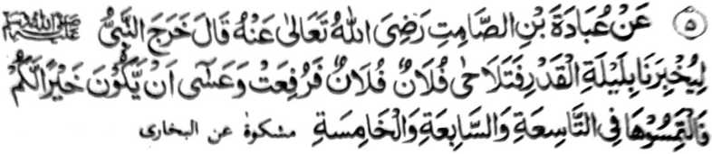

Hadith 5

Miyakathitayan ko 'Ubaadah bin Saamit (Radhiallaho 'Anho) a pitharo iyan a lominiyo so Nabi (Sallallaho Alaihi Wasallam) ka petharo-on niyan rekami so Lailatul Qadr na ogaid na ba den. a gi-i phawala a dowa ka tao ko manga Muslim na miyatharo iyan, “Lominiyo ako ka petharo-on aken rekano so Lailatul Qadr ogaid na baden miphawala si aki oto go si aki oto na miya-angkat raken (kiyalipatan aken) na masiken a giyanan-i mapiya, rekano sa mbanoga niyo ko ika siyaw o di na ika pito o di na si-i ko ika lima a kagagawi-i. ”
OSAYAN
Telo a mala-i gona a ‘enda-o a mitotoro sangka-iya Hadith. Paganay ron, na miya-aloy so gi-i kaphawala, a aya mini-onga niyan na so katokawi ko titho a katatago-an ko Lailatul Qadr na miya-angkat reketano. So kaphapawala ago so kambobono na aya den lalayon a sabap a kapekhada o manga limo. Miyaka-isa na so Rasulollah (Sallallaho Alaihi Wasallam) na iniza-an niyan so manga Sahabah: “Ba ko rekano petharo-a so galebek a taralebi a di so Sambayang, go so kaphowasa ago so kazasadeka?” So manga Sahabah na minisembag iran, “Oway”. Oriyan niyan na miyatharo o Rasulollah (Sallallaho ‘Alaihi Wasallam): “Tatapa niyo so kalilintad ago so kanggiginawa-i ko let-let iyo, ka mata-an a so kambobono iyo na pekhabinasa niyan so paratiyaya niyo.” Ma-ana lagid den o kapenggaraba o gonting ko bok, na lagid den noto a rarad si-i ko Agama o kambobono.
Pokasen non pen so manga madodonya a manga tao ka apiya so seketano a aya katawi ron na bara-agama ago mapasangi kan-dhikr na di pen makalilidas sangka-iya a kaphapawala ago kaperirido-ai, go tanto tano pen a thetegas ko manga tindeg tano, makim pen angkanan a katharo o Nabi (Sallallaho ‘Alaihi Wasallam). Si-i ko paganay a pinto angka-iya a kitab, na miyabatiya tano a kiyatharo-a o Rasulollah (Sallallaho ‘Alaihi Wasallam) a so kaphapa-awinga ko Muslim na mata-an a tanto a mala a dosa sa lagid den o karata o kathobo, ogaid na di tano den phanabiya-an so bantogan o Muslim, go di tano ithareg so gi-i tano kaphapaka-ito, sa di tano den paginengka-an so manga lalangan o Allah (Subhaanaho Wa Ta’ala) ago so Sogo Iyan. Pitharo o Qur’an, “..Go di kano pephapawala, ka amay-amay na kada-an kano sa panamar ago ma-angkat so bager iyo.” Atas tanggongan imanto o siran a aya bo a antap iyan na anda manaya-i kabinasa-i ran ko bantogan o manga ped iran a dekha siran pasin na pamimikirana iran o anda taman-i kiyabinasa-i ran go manga ginawa iran, rakhes a pamimikirana iran o anda taman-i kiyabinasa iran sa kailay o Allah (Subhaanaho Wa Ta'ala) ago so manga ped a phagilay kiran misabap sangka-iya a miyakarata-rata a galebek iran. So Rasulollah (Sallallaho ‘Alaihi Wasallam) na miyatharo iyan a sa tao a itolak iyan so pagari niyan a Muslim si-i bo ko soled o telo gawi-i, na kapantagan non a kapatay na manaros ko Naraka. Si-i ko isa a Hadith na miya-aloy ron a oman alongan a Isnin ago Khamis, na so manga Amaal o manosiya na iphenaik ko Allah (Subhaanaho Wa Ta’ala). Oriyan niyan na sabap sa Limo Iyan (a onga o mapiya a Amaal) na ibegay Niyan so rila, inonta bo so manga kafir ago so manga pananakoto. Ogaid na so peman so siran a pekhakarido, a miyatephed so gi-i ran kangginawa-i, na tharo-on: Ta-alika niyo pasin so balas iran taman sa makangginawa-i siran pharoman.
Isa pen a Hadith a miya-aloy ron a igira inipangadap so Amaal ko Allah (Subhaanaho Wa Ta’ala) oman alongan a Isnin ago Khamis, na so Taubat na tatarima-an pho-on ko manga tao a pethaobat ago so rila na imbegay ko siran a phamangeni sa rila; so peman so siran a miyakaphapawala, na khalepas siran sangka-i [a mapiya]. Aden pen a Hadith a inipangenda-o niyan reketano a si-i ko kagabinan ko ika sapolo ago pat ko Sha’aban [Shab-i-Bara’at] na so Limo o Allah (Subhaanaho Wa Ta’ala) na nggomonen ko langowan a ka-aden o Allah (Subhaanaho Wa Ta’ala) go ibegay kiran so rila inonta bo so dowa a tao: Isa-on so Kafir' [Miyongkir] na ika dowa so papadaleman niyan so ginawa niyan sa ratem ko manga ped. Si-i ko isa a Hadith na miya-aloy ron: “Aden a telo a manga tao a so Sambayang iran na di niyan khalepas apiya sarangao so manga poro iran [ko kapenaik iyan ko langit].” Miya-aloy a ped ro-o so siran a miyakaperaratema.
Giyangkanan a da mapira a koyogan a miya-aloy na miyarinayag pho-on sangka-iya a bandingan tano. Kena ba aya antap aken si-i na ba ko pagaloya so langowan a manga Hadith a makapantag ko kambobono o di na kaphapawala. Aya bo a kiya-aloya ko ron na phaki-inengka aken angka-iya mala a dosa, a di tano ndidimatagen, taman sa apiya so siran a ibebetad tano sa barasimba a manga tao na di siran non makalilidas. Salakao ro-o pen na giyangka-iya a kambobono a mokit sa manga rarata a katharo ago kathotolaka na dosa ago marata si-i ko pangilay-layan o Islam, inonta bo o mokit sa kitolaken ago katapelisa ko kadodoniya-i ago so sangor ko donya. Miyapakay a kitolaken ko tao misabap ko marata a ola-ola niyan o di na mokit ko manga bitikan o Agama (a sekaniyan na mariribat ago kapangingisoya-an). So Hazrat Ibn umar (Radhiallaho Anho) na miyaka-isa na inaloy niyan a katharo o Rasulollah (Sallallaho Alaihi Wasallam) a aden a miyatharo o wata iyan a malo niyan miyasangka. Aya kiya-oriyan non na da den mbitiyara-in o Ibn Umar (Radhiallaho Anho) so wata iyan ko tenday o kaoya-goyag iyan. Madakel a lagida-i a miyanggola-ola ko kiyapaginetao o manga Sahabah. Si-i sangka-iya a masa tano imanto, na so bo so Allah (Subhaanaho Wa Ta’ala) na aya lebi a mata-o, go aya lebi a Maongangen go katawan Niyan so titho a mambebetad tano, makapantag ko pira-pira-i miyakathotolaka sabap ko Agama go pira-pira-i pantag ko kiyata-azir o bangensa tano ago so kiyabinasa o bantogan tano.
Ika dowa zaboten sangka-iya Hadith a gi-i tano pagosain na giya kakha-inengka-a tano sa so tao na patot a maso-at ago matarima iyan so kokoman o Allah (Subhaanaho Wa Ta’ala) ko langowan taman. Ibarat, apiya aya kiya-ilaya tano ron na so kiya-angkat o kakhatokawi ko katatago-an ko Lailatul Qadr na tanto a mala a miyapapas a kata-o, na khatarima tano to a [limo] pho-on ko Allah (Subhaanaho Wa Ta’ala). Sabap si-i na miyatharo o Rasulollah (Sallallaho ‘Alaihi Wasallam): “Masiken a giyoto-i mapiya a okit.” Pamimikirana ini o tao. So Allah (Subhaanaho Wa Ta’ala) na tatap a Makalimo-on ko manga oripen Niyan. Apiya aden a miyasogat a tiyoba sabap ko manga dosa niyan, na aya bo a zowa-an niyan na phagapas ko Kadenan niyan, go khompabeliyan niyan so dosa niyan, na giyangkoto a tiyoba na pekhasalin sa mala a mapiya.
So manga ulama tano na miya-aloy ran so pira timan a kapakalelebi o di tano katawi ko ponto a gawi-i o Lailatul Qadr. Paganay ron, opama kiyatokawan tano so katatago-an sangka-iya a babarakaten a kagagawi-i, na aden den a manga tao a di ran den simba-an so Allah (Subhaanaho Wa Ta ala) ko salakao a kagagawi-i. Aya den a mambebetad na so tao na inipaliyogat iyan so kathoday niyan ago nggalebek sa Ibaadah ko phipira a kagagawi-i sa arap iyan sa giyoto angkoto a kagagawi-i. Aya ma-ana ini na madakel a kagagawi-i a pekhasimba-on so Allah (Subhaanaho Wa Ta'ala) na mala mambo a pekhakowa a balas.
Ika dowa, na aden den a manga ped tano a di ran khagaga so kapananggila-i ko dosa. Tanto a piyakalek-lek ago kada a ontong a mapembagi-an niran, a minsan pen katawan niran a giyangkoto a kagagawi-i na giyoto so Lailatul Qadr, na minggalebek siran pen sa manga dosa ago manga rarata. Miyaka-isa na so Rasulollah (Sallallaho ‘Alaihi Wasallam) na somiyoled sa Masjid, na miya-ilay niyan a sakatao a Sahabi a totorogen. Pitharo iyan ko Ali (Radhiallaho ‘Anho): “Pokawa ngka sekaniyan ka aden makapagabedas.” Pinggola-ola oto o Ali (Radhiallaho Anho) na oriyan niyan na pitharo iyan ko Rasulollah (Sallallaho ‘Alaihi Wasallam): “Ya Rasulollah! Seka den-i lalayon paganay a gi-i magalok-alok ko mapiya. Ino seka den-i da-on pokaw?” Sabap si-i na so Nabi (Sallallaho ‘Alaihi Wasallam) na minisembag iyan: “Inikawan aken o ba baden sangka angkanan a mama ka so kasangka-a ko sogo-an aken na Kufr (kiyasangka-a ko Agama). O siyangka iyan so sogo-an ka on na kena ba niyan ikha-kapir.” Sakamaoto mambo a so Allah (Subhaanaho Wa Ta’ala) ko Kala Iyan-i Limo na di Niyan kabaya o ba so Muslim na ba nggalebek sa dosa ago manga rarata minsan pen katawan niyan o antona-a ko manga kagagawi-i so titho [a Lailatul Qadr].
Ika telo, na o peman o katawi tano, go minsan pen giyangkoto a [katawi tano ron], na pho-on tano pakalepasa, sabap ko phipira a nganin a khapakay a aden a kapa-ar tano ron o di na da den a kapa-ar tano ron, na si-i ko tenday o Ramadhan na da den a satiman bo a salakao a kagagawi-i a ba tano ron nggalebek sa Ibaadah, kena ba imanto a madakel a tao a pekhagaga iran a apiya satiman, o di na dowa o di na telo a kagagawi-i na pekhitindeg iran so Ibaadah, sabap ko di tano katawi o anda matatago so Lailatul Qadr.
Ika pat, na oman-i kagagawi-i a mitindeg-on so Ibaadah pantag ko gi-i kambanoga ko Lailatul Qadr a mimbaloy a kagagawi-i a matatangked a sasibay a balas a khaparoli ron.
Ika lima, miyabatiya tano a so Allah (Subhaanaho Wa Ta'ala) na ipephangandag Iyan ko manga Mala-ikat Iyan so siran a Miyamaratiyaya a gi-i melogat pantag ko Ibaadah igira Ramadhan. Sangka-iya masa na tanto a miyagomareg so kapekhaparoliya ko kasoso-at o Allah (Subhaanaho Wa Ta'ala) sabap sa minsan pen di katawan so kagagawi-i a titho a katatago-an ko Lailatul Qadr, go minsan pen di ran matatangked so titho a wakto niyan na gi-i siran den manamar meromasay sa simba ko Allah (Subhaanaho Wa Ta'ala), oman kagagawi-i. Opama ka giyanan-i gi-i ran kaperomasay ko di ran katawi ko Lailatul Qadr, na anda taman-i kaphagomareg o kapheromasay ran opama ka ba iran den katokawi?
Madakel pen a kapiya [o di ron katawi], Langon tano ron mata-o a so Allah (Subhaanaho Wa Ta’ala) na aden a pephagema-an Niyan a manga nganin, ibarat o 'Ismul Aa’zam’ (so Mala a Ngaran o Allah (Subhaanaho Wa Ta’ala), a opama ka aya tano Ron mitalo ko kaphangeni tano, na tharima-an Niyan). Sakamaoto so satiman a wakto ko gawi-i a Jum’ah a itatarima ko manga pangeni; giya-i mambo a masa na di matatangked [o anda matatago].
Giyangkanan a ika telo a piyaki-inengka angkanan a Hadith na so kapembanoga ko Lailatul Qadr na si-i ko telo a kagagawi-i - ma-ana so ika siyaw, ika pito, ika lima Igira miyabatiya ini a mitotompok ko manga ped a Hadith, na kiyatokawan tano a aya mitotoro si-i na so mori a sapolo a kagagawi-i ko Ramadhan. Sabap si-i na so katendo-a o antona-a kagagawi-i na ipho-on tano ko ika dowa polo a kagagawi-i, na itongen tano ko sompat iyan, sa giyangkanan a telo a kagagawi-i na siran so ika dowa polo ago lima, ika dowa polo ago pito, ago so ika dowa polo ago siyaw, O peman o si-i tano mepho-on ko ika dowa polo ago siyaw a kagagawi-i na mendod tano (ko masa a so Ramadhan na ba den dowa polo ago siyaw gawi-i) na giyangka-iya a telo a kagagawi-i na giyoto so ika dowa polo ago isa, ika dowa polo ago telo, ago ika dowa polo ago lima, ogaid na o so Ramadhan na telo polo gawi-i, na mimbaloy a giyoto so ika dowa polo ago dowa, ika dowa polo ago pat, go ika dowa polo ago nem a kagagawi-i Sabap san, na khailay den o tao anda taman-i di niyan katatangked ko titho a masa niyan, sa aya kamata-ani ron na so manga ulama na mararani sapolo ago lima a pimbarangan a pana-awil iran non Sabap si-i na so manga ulama na miyatharo iran a so Lailatul Qadr na kena ba si-i bo ko mapepento a kagagawi-i ko Ramadhan, sa so phakatondog a ragon na salakao peman a kagagawi-i a khatago-an non. Aden a manga masa a so Rasulollah (Sallallaho ‘Alaihi Wasallam) na ipezogo iyan ko manga Sahabah a mbanoga iran ko phipira gawi-i; na aden mambo a masa a pethendo-on niyan.
So Hazrat Abu Hurairah (Radhiallaho Anho) na miyapanothol iyan a miyaka-isa na miya-aloy so Lailatul Qadr ko gi-i kambibitiyara-i o manga Sahabah, na ini-iza o Rasulollah (Sallallaho ‘Alaihi Wasallam): “Antona-a imanto a gawi-i?'’ Minisembag iran: “Ika dowa polo ago dowa ko Ramadhan. Miyatharo o Nabi (Sallallaho Alaihi Wasallam): “Mbanoga niyo so Lailatul Qadr ko kagagawi-i a phakatondog sangka-iya gawi-i.”
So Hazrat Abu Zar (Radhiallaho Anho) na miyapanothol a iniza-an niyan so Nabi (Sallallaho ‘Alaihi Wasallam) o ba so Lailatul Qadr na si-i bo pethoron ko tenday o masa o Rasulollah (Sallallaho ‘Alaihi Wasallam) o taman pen ko oriyan niyan. So Rasulollah (Sallallaho ‘Alaihi Wasallam) na miyatharo iyan: “Mitataros den taman ko Gawi-i a Kaphangokom.” Oriyan niyan na mini-iza aken Anda matatago ko Ramadhan-i kapethoron niyan?” Minisembag o Nabi (Sallallaho ‘Alaihi Wasallam): “Mbabanoga niyo sekaniyan ko paganay a sapolo gawi-i ago si-i ko mori a sapolo gawi-i,” Oriyan noto na miyatembang so Nabi (Sallallaho ‘Alaihi Wasallam) ko manga ped a galebek. Niyayaw aken na so kiyapakatho-ona ami na mini-iza aken. ‘Anda sangkanan a sapolo gawi-i so Lailatul Qadr? Sabap si-i na kiyararangitan ako o Rasulollah (Sallallaho Alaihi Wasallam) a da-on den noto sagad ko miyaona, sa miyatharo iyan, “O kabaya o Allah (Subhaanaho Wa Ta'ala) a katokawan sekaniyan [a Lailatul Qadr] na ino ba Niyan reketano di mapetharo? Mbanoga ngka ko mori a pito a kagagawi-i, go di ka den phaka-iza pharoman. Si-i ko isa a Hadith na miyapanothol peman so Rasulollah (Sallallaho ‘Alaihi Wasallam) a miyatharo iyan ko isa ko manga Sahabah niyan a so Lailatul Qadr na si-i ko ika dowa polo ago telo a kagagawi-i. So Ibn Abbas (Radhiallaho ‘Anho) na miyapanothol iyan. “Si-i ko masa a katotoroga raken, na aden a sakatao a pitharo iyan raken ko taginepen aken: ‘Mbowat ka, ka imanto so Lailatul Qadr'. Miyagenao ako na minggaga-an ako somong ko Rasulollah (Sallallaho ‘Alaihi Wasallam) na miya-oma ko sekaniyan a gi-i zambayang. Giyoto so ika dowa polo ago telo a kagagawi-i.” Pho-on peman ko ped a tothol a so ika dowa polo ago pat na giyoto so Lailatul Qadr. So Hazrat Abdullah ibn Mas'ood (Radhiallaho ‘Anho) na miyatharo iyan: “Sa tao a matatap ko Ibaadah ko langon o kagagawi-i sangkoto a ragon na khato-on niyan so Lailatul Qadr.” (Aya ma-ana niyan na giyangka-iya kagagawi-i na khapakay a kena ba si-i bo ko Ramadhan.) Kagiya ma-aloya-i ko Ubay bin Ka’ab (Radhiallaho ‘Anho) na miyatharo iyan. “Oway, aya mapemama-ana o Ibn Mas’ood na so manga tao na kena ba giyabo a gi-i niyan kathoday sangka-iya a miya-aloy a kagagawi-i na masoso-at den.” Oriyan noto na mizapa sekaniyan ko Allah (Subhaanaho Wa Ta’ala) sa so Lailatul Qadr na si-i matatago ko ika dowa polo ago pito. Giya-i mambo-i kepit o kadakelan ko manga Sahabah ago so manga Tabi’een. Aya titho a mapemama-ana o Ibn Mas'ood go so Ubay (Radhiallaho ‘Anhoma) na sa tao a matatap sa Ibaadah ko langowan o kagagawi-i ko saragon na khatokawan niyan so wakto o Lailatul Qadr. So peman so manga Imaam, na aya lomiyangkap a kepit o Imaam Abu Hanifah (Rahmatullahi ‘Alaihi) na so Lailatul Qadr na gi-i magalin-alin ko saragon, go aden pen a isa a kepit iyan na gi-i magalin-alin ko soled o Ramadhan. So isa ko kiyabantogan a manga morit iyan a siran so Imaam Muhammad (Rahmatullahi ‘Alaihi) ago so Imaam Abu Yousuf (Rahmatullahi ‘Alaihi), na aya kepit iran na mapepento ko satiman a kagagawi-i ko Ramadhan (a di katawan). So peman so [Mazhab a] Shafi’e na aya kepit iran non na si-i matatago ko ika dowa polo ago isa, So Imaam Ahmad ago so Imaam Malik na aya kepit iran non na si-i matatago ko mori a sapolo gawi-i ko Ramadhan, na ron gi-i pagalin-alin oman ragon sa di mapepento. Ogaid na so kadakelan ko manga ulama na aya pamikiran niran non na mararani si-i matatago so Lailatul Qadr ko ika dowa polo ago pito (ko Ramadhan).
So Ibn Arabi (Rahmatullahi ‘Alaihi) na pitharo iyan: “Si-i ko pamikiran aken non, na so kepit o siran a aya paratiyaya iran na so Lailatul Qadr na gi-i magaloyan ko manga kagagawi-i ko tenday o saragon na mararani aya benar, sabap sa miyakadowa ko mailay ko olan-olan a Sha’ban -miyaka-isa na si-i ko ika sapolo ago lima na miyaka-isa peman na si-i ko ika sapolo ago siyaw; go miyakadowa ko mailay ko ika dowa a sapolo gawi-i ko Ramadhan - si-i ko ika sapolo ago telo ago si-i ko ika sapolo ago walo. Miya-ilay aken pen ko omani gansar a kagagawi-i ko mori a sapolo a kagagawi-i. Sabap si-i na miyatangked aken a gi-i magaloyan ko langowan a kagagawi-i ko saragon, ogaid na si-i kalilid pephaka-oma igira Ramadhan.”
So Shah Waliyullah (Rahmatullahi Alaihi) sa Delhi na aya paratiyaya niyan na so Lailatul Qadr a makadowa makatoron ko oman ragon (a) isa a Lailatul Qadr na giyoto so [kagagawi-i] a so manga sogo-an o Allah (Subhaanaho Wa Ta’ala) na ipethoron (ko manga Mala-ikat), giya-i mambo so kagagawi-i a kinitoronen ko Qur'an pho-on ko Lauhul Mahfuz [na initepad] ko manga Langit. Giyangka-iya kagagawi-i na kena ba si-i bo matatago ko Ramadhan, ka gi-i magalin-alin sa khapakay ko apiya antona-a kagagawi-i ko saragon Ogaid, na so mapepento a kagagawi-i a kinitoronen ko Qur’an na si-i matatago ko Ramadhan (b) Ika dowa a Lailatul Qadr na giyoto so mala-i kipantag, a masa a kapethoron o manga Mala-ikat sa tanto siran a ndadak-dakel, go masa a khipapatongen so manga Shaitan, go masa a itatarima ko manga pangeni. Giyangka-iya a kagagawi-i na si-i bo matatago ko Ramadhan, ko manga gansar a kagagawi-i ko mori a sapolo gawi-i (Giyangka-iya kepit o Shah Waliyullah (Rahmatullahi ‘Alaihi) na aya zosoramigan a paratiyaya o ama aken).
Naino ka apiya anda den-i benar: madowa pen a Lailatul Qadr o di na isa isa, na aya mata-an na paliyogat ko tao so kambabanoga niyan non; o di niyan khagaga ko soled o saragon, na aya taman a kaito iyan na si-i ko tenday o Ramadhan, na o peman o tanto anan a maregen, na aya taman a kakampet iyan na si-i ko mori a sapolo gawi-i. O pen o maregen angka-i, na aya taman niyan na si-i ko manga gansar a kagagawi-i; sa o peman o ba pen di khagaga na so ika dowa polo ago pito [a kagagawi-i] na o ba pakalepasa. Sabap sa opama ka mapiya-i bagi-an so tao a ma-atod iyan angka-iya a kagagawi-i, na khatimbangan niyan so langowan o kapipiya ginawa ago langon a pakabira-i a nganin sa donya. Apiya pen di maparoli o tao angka-iya a tanto a gi-i mbanogen a kagagawi-i na aya taman a kaito a khaparoli o tao na khaparoli so balas o simba (Ibaadah). Aya panamari o tao na so Sambayang a faralo ko Maghrib ago so 'Isha ko tenday o saragon na a minggolalan niyan sa barajoma; sabap sa o mi-atod ko Lailatul Qadr na so balas angkanan a dowa na tanto a mala. Tanto a mala a limo pho-on ko Allah (Subhaanaho Wa Ta ala) a amay ka so tao na meromasay pantag ko Agama niyan na da niyan maparoli so kapaka-apas, na mbalasan sekaniyan o Allah (Subhaanaho Wa Ta’ala) ko kiyaperomasay niyan. Ogaid na makim pen angka-i, na anda taman i kadakel o bilangan o siran a tanto a gi-i meromasay pantag ko Agama? O si-i ko pantag ko galebek a kadodoniya-i na igira da-a mini-onga a mapiya o kiyaperomasay ron na ini-itong angkoto a kaperomasay sa lapis. Minsa pen angka-i a maola-ola na so manga tao na itataros iran den so kipezenggain niran ko manga oras iran, go so manga bager iran ago so manga tamok iran ko gi-i kazaloba-a ko donya a da-a tondas iyan ago da-a a mala-a antap iyan, go di matatangked o ba aden a khibegay niyan a kipantag ago kapipiya ginawa.